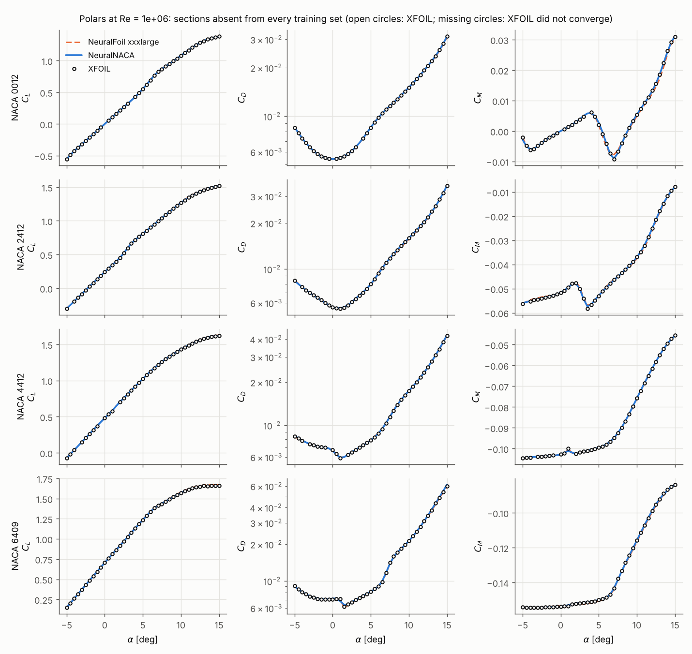
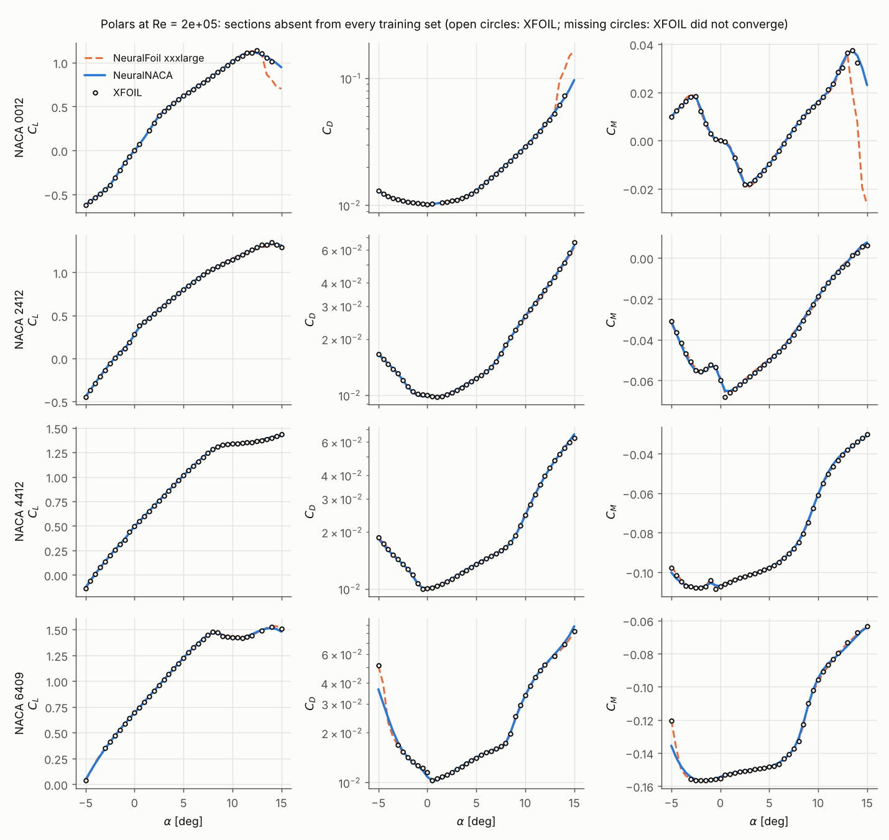
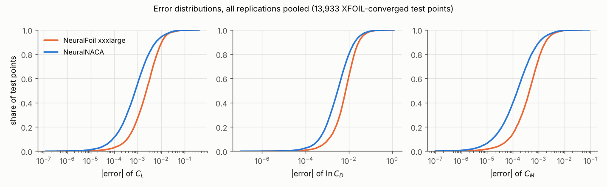
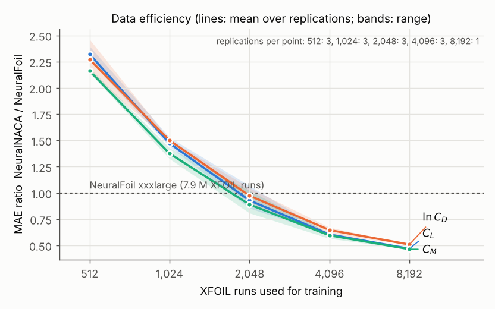
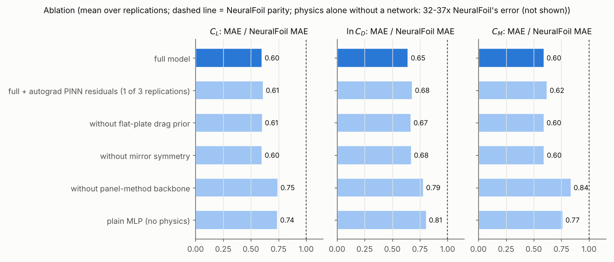

Results¶
All tables on this page are generated from the files in benchmarks/results/ (neuralnaca report), and all figures
with neuralnaca figures. The protocol is described in Benchmark protocol. The ratios in the prose
below are copied from those tables, and a test checks that they agree.
Summary¶
- Lower mean error than NeuralFoil-xxxlarge for NACA sections, in every replication. Pooled over five replications and 13,933 held-out test points, the MAE ratios NeuralNACA / NeuralFoil are 0.62 [0.58, 0.65] for \(C_L\), 0.65 [0.62, 0.68] for \(\ln C_D\) and 0.60 [0.57, 0.64] for \(C_M\). The interval excludes 1 for all three outputs in each replication, including the two generated after the code freeze, and against every NeuralFoil model size.
- The typical error is about 2.3-3x smaller (medians), but the largest errors are not smaller. The RMSE ratios are 0.97 [0.82, 1.15] (\(C_L\)), 0.88 [0.80, 0.97] (\(\ln C_D\)) and 0.99 [0.82, 1.21] (\(C_M\)). Rare large errors in a sparsely sampled corner (high camber, low Re, negative incidence) offset the typical-case advantage for \(C_L\) and \(C_M\). See Limitations.
- The main reason NeuralNACA wins is geometry. NeuralFoil cannot represent a NACA section exactly; it analyses
an 8+8-weight Kulfan fit of it. That fit is geometrically excellent, yet XFOIL's answer for the fitted shape differs
from that for the exact section by about as much as NeuralFoil's entire error.
- Scored against XFOIL on the fitted shape (what NeuralFoil actually analyses), NeuralFoil is more accurate than NeuralNACA is against XFOIL on the exact shape (ground-truth study below).
- Even a plain MLP without any physics, trained on 4,096 exact-geometry XFOIL runs, beats NeuralFoil (ablation).
- NeuralNACA is therefore the better tool for NACA 4-digit sections, because it models them exactly and specialises. It is not a better XFOIL emulator in general.
- The ground-truth protocol hardly matters; the geometry does. Against XFOIL run with NeuralFoil's own warm-started sweep protocol on the exact geometry, the ratios are 0.61 [0.54, 0.67], 0.67 [0.61, 0.73] and 0.62 [0.56, 0.68]. Against XFOIL on NeuralFoil's Kulfan geometry, NeuralFoil wins (e.g. 1.92 [1.73, 2.10] for \(C_L\), cold start).
- Of the physics ingredients, the panel-method backbone is what matters. Removing it increases the MAE by 21-41 %. Mirror symmetry and the drag prior change the MAE by at most 4 %; they guarantee consistency rather than accuracy. Autograd PINN residuals do not help and make training 4.5 times slower.
- Break-even with NeuralFoil is at about 2,000 XFOIL runs (0.026 % of NeuralFoil's). With 8,192 runs (one replication) the error is about half of NeuralFoil's.
- Variability comes from the data, not the training. Retraining on the same data with other seeds changes the MAE by about 1-2 % (standard deviation); across replications the ratio has a standard deviation of 0.03-0.06.
- The warning signals are informative but imperfect. The support flag catches 36-47 % of the conditions where XFOIL fails and wrongly flags under 0.5 % of converged ones. The ensemble spread has a rank correlation of 0.58-0.69 with the actual error.
- Speed is comparable to NeuralFoil and about 40-1,400 times faster than XFOIL, depending on the batch shape.
Polars of unseen sections¶
None of these sections is in any training set. Open circles are XFOIL; missing circles mean XFOIL did not converge.

At low Reynolds number the polars become strongly non-linear (laminar separation). Both surrogates follow XFOIL; past stall of NACA 0012 they diverge from each other where XFOIL still converges.

Error distributions¶
The cumulative distributions show where the advantage lies. NeuralNACA's curve is to the left (smaller errors) for most points, and the two curves meet in the tail.

Data efficiency and ablation¶


Headline: all replications pooled¶
5 independent replications (each with its own Sobol training set of 4,096 XFOIL runs = 0.052 % of NeuralFoil's 7,913,292, and its own i.i.d. test set of unseen airfoils); 13,933 XFOIL-converged test points in total. Ratios are NeuralNACA / NeuralFoil-xxxlarge with 95 % paired-bootstrap intervals (< 1: NeuralNACA more accurate).
| output | NeuralNACA MAE | NeuralFoil MAE | MAE ratio | RMSE ratio | NeuralNACA median | NeuralFoil median |
|---|---|---|---|---|---|---|
| CL | 0.0031 | 0.0050 | 0.62 [0.58, 0.65] | 0.97 [0.82, 1.15] | 0.00080 | 0.00236 |
| ln CD | 0.0092 | 0.0142 | 0.65 [0.62, 0.68] | 0.88 [0.80, 0.97] | 0.00306 | 0.00717 |
| CM | 0.00052 | 0.00086 | 0.60 [0.57, 0.64] | 0.99 [0.82, 1.21] | 0.000152 | 0.000444 |
Per replication¶
| seed | test pts | train conv. | CL ratio | ln CD ratio | CM ratio | RMSE ratios (CL / ln CD / CM) | Wilcoxon p (max) | reflection test |
|---|---|---|---|---|---|---|---|---|
| 0 | 2,790 | 3,808 | 0.60 [0.54, 0.66] | 0.67 [0.61, 0.74] | 0.62 [0.56, 0.68] | 0.90 / 0.92 / 0.90 | 3e-94 | pass (1e-06) |
| 1 | 2,776 | 3,833 | 0.61 [0.54, 0.67] | 0.60 [0.55, 0.66] | 0.61 [0.55, 0.67] | 0.78 / 0.69 / 0.89 | 1e-104 | pass (1e-06) |
| 2 | 2,783 | 3,777 | 0.61 [0.54, 0.68] | 0.66 [0.59, 0.75] | 0.57 [0.51, 0.63] | 0.92 / 1.01 / 0.82 | 5e-106 | pass (1e-06) |
| 3 | 2,801 | 3,807 | 0.67 [0.59, 0.77] | 0.67 [0.61, 0.73] | 0.69 [0.60, 0.81] | 1.17 / 0.92 / 1.53 | 2e-104 | pass (5e-07) |
| 4 | 2,783 | 3,824 | 0.59 [0.51, 0.69] | 0.65 [0.58, 0.72] | 0.53 [0.48, 0.58] | 1.13 / 0.86 / 0.70 | 9e-98 | pass (8e-07) |
Standard deviation of the MAE ratio across replications: CL 0.033, ln CD 0.028, CM 0.062.
Against every NeuralFoil model size¶
Mean over replications of the MAE. The last columns give NeuralNACA's MAE ratio against that size.
| model | CL MAE | ln CD MAE | CM MAE | ratio CL | ratio ln CD | ratio CM |
|---|---|---|---|---|---|---|
| NeuralNACA (this work) | 0.0031 | 0.0092 | 0.00052 | - | - | - |
| NeuralFoil xxsmall | 0.0205 | 0.0748 | 0.00380 | 0.15 | 0.12 | 0.14 |
| NeuralFoil xsmall | 0.0139 | 0.0487 | 0.00262 | 0.22 | 0.19 | 0.20 |
| NeuralFoil small | 0.0124 | 0.0375 | 0.00236 | 0.25 | 0.25 | 0.22 |
| NeuralFoil medium | 0.0090 | 0.0252 | 0.00168 | 0.34 | 0.37 | 0.31 |
| NeuralFoil large | 0.0067 | 0.0187 | 0.00126 | 0.46 | 0.50 | 0.41 |
| NeuralFoil xlarge | 0.0056 | 0.0167 | 0.00102 | 0.55 | 0.55 | 0.51 |
| NeuralFoil xxlarge | 0.0049 | 0.0148 | 0.00088 | 0.63 | 0.62 | 0.59 |
| NeuralFoil xxxlarge | 0.0050 | 0.0142 | 0.00086 | 0.62 | 0.65 | 0.60 |
Where the errors are (all replications pooled)¶
MAE of NeuralNACA vs NeuralFoil-xxxlarge per band.
| band | points | CL | ln CD | CM |
|---|---|---|---|---|
| α [deg] -5 to 0 | 3,475 | 0.0029 vs 0.0031 | 0.0102 vs 0.0106 | 0.00061 vs 0.00061 |
| α [deg] 0 to 5 | 3,594 | 0.0024 vs 0.0033 | 0.0092 vs 0.0110 | 0.00046 vs 0.00061 |
| α [deg] 5 to 10 | 3,600 | 0.0024 vs 0.0040 | 0.0071 vs 0.0129 | 0.00042 vs 0.00080 |
| α [deg] 10 to 15 | 3,264 | 0.0048 vs 0.0101 | 0.0107 vs 0.0231 | 0.00059 vs 0.00147 |
| Re 1e+05 to 3e+05 | 3,168 | 0.0074 vs 0.0068 | 0.0155 vs 0.0146 | 0.00120 vs 0.00113 |
| Re 3e+05 to 1e+06 | 3,500 | 0.0030 vs 0.0054 | 0.0101 vs 0.0156 | 0.00053 vs 0.00086 |
| Re 1e+06 to 3e+06 | 3,521 | 0.0015 vs 0.0043 | 0.0070 vs 0.0151 | 0.00025 vs 0.00076 |
| Re 3e+06 to 1e+07 | 3,744 | 0.0009 vs 0.0038 | 0.0052 vs 0.0117 | 0.00018 vs 0.00074 |
Optimisation variance (same data, different training seeds)¶
Replication 0's training set, retrained with 5 training seeds (0, 101, 102, 103, 104).
| output | MAE mean | MAE sd | MAE ratio vs NeuralFoil: mean | sd | worst |
|---|---|---|---|---|---|
| CL | 0.0031 | 0.00003 | 0.603 | 0.005 | 0.612 |
| ln CD | 0.0097 | 0.00014 | 0.677 | 0.010 | 0.688 |
| CM | 0.00054 | 0.000012 | 0.611 | 0.013 | 0.632 |
Ablation: what each physics ingredient contributes¶
Same training data, same recipe, same test points; MAE averaged over the replications listed. The change is relative to the full model on the same replications (positive = worse without the ingredient).
| variant | replications | CL MAE | ln CD MAE | CM MAE | vs full | beats NeuralFoil (all 3, CI) |
|---|---|---|---|---|---|---|
| physics alone (panel method + drag prior, no network) | 0, 1, 2 | 0.1866 | 0.4562 | 0.03163 | 62x / 49x / 62x | 0/3 |
| plain MLP (no physics) | 0, 1, 2 | 0.0037 | 0.0116 | 0.00066 | +23% / +25% / +29% | 3/3 |
| without panel-method backbone | 0, 1, 2 | 0.0038 | 0.0113 | 0.00072 | +24% / +21% / +41% | 3/3 |
| without mirror symmetry | 0, 1, 2 | 0.0030 | 0.0097 | 0.00052 | +0% / +4% / +0% | 3/3 |
| without flat-plate drag prior | 0, 1, 2 | 0.0030 | 0.0096 | 0.00051 | +0% / +4% / +0% | 3/3 |
| full model | 0, 1, 2 | 0.0030 | 0.0093 | 0.00051 | - | 3/3 |
| full + autograd PINN residuals | 0 | 0.0032 | 0.0098 | 0.00055 | +2% / +2% / +1% | 1/1 |
Training time on the reference machine (replication 0): 4.0 min for the full model, 18.0 min with the autograd residuals (4.5x).
Data efficiency¶
Same recipe trained on the first n points of each replication's Sobol training sequence. Ratios are NeuralNACA / NeuralFoil-xxxlarge MAE (mean over the replications available for that n).
| XFOIL runs | share of NeuralFoil's | replications | CL MAE | ln CD MAE | CM MAE | ratio CL | ratio ln CD | ratio CM |
|---|---|---|---|---|---|---|---|---|
| 512 | 0.006 % | 3 | 0.0116 | 0.0326 | 0.00186 | 2.32 | 2.27 | 2.16 |
| 1,024 | 0.013 % | 3 | 0.0074 | 0.0216 | 0.00118 | 1.47 | 1.50 | 1.38 |
| 2,048 | 0.026 % | 3 | 0.0047 | 0.0140 | 0.00076 | 0.93 | 0.97 | 0.89 |
| 4,096 | 0.052 % | 3 | 0.0030 | 0.0093 | 0.00051 | 0.60 | 0.65 | 0.60 |
| 8,192 | 0.104 % | 1 | 0.0024 | 0.0073 | 0.00041 | 0.47 | 0.51 | 0.46 |
Sensitivity to the definition of the XFOIL ground truth¶
Replication 0's test points re-solved under 5 definitions; scored on the 2,581 points that converged under all of them. naca = exact NACA coordinates; kulfan = the 8+8-weight Kulfan fit that NeuralFoil analyses internally (in NeuralFoil's normalised frame); naca-normalized = exact coordinates in that same frame (control). NeuralNACA was trained on cold/naca labels and predicts XFOIL for the exact section; NeuralFoil's training labels were nf-sweep/kulfan.
| ground truth | NeuralNACA MAE (CL / ln CD / CM) | NeuralFoil MAE | ratio CL | ratio ln CD | ratio CM |
|---|---|---|---|---|---|
| cold/naca | 0.0027 / 0.0082 / 0.00048 | 0.0047 / 0.0129 / 0.00081 | 0.58 [0.52, 0.64] | 0.64 [0.58, 0.69] | 0.59 [0.54, 0.65] |
| cold/naca-normalized | 0.0030 / 0.0086 / 0.00074 | 0.0050 / 0.0132 / 0.00083 | 0.61 [0.55, 0.68] | 0.65 [0.59, 0.71] | 0.89 [0.84, 0.95] |
| cold/kulfan | 0.0046 / 0.0137 / 0.00082 | 0.0024 / 0.0065 / 0.00042 | 1.92 [1.73, 2.10] | 2.11 [1.94, 2.29] | 1.93 [1.77, 2.11] |
| nf-sweep/naca | 0.0032 / 0.0097 / 0.00054 | 0.0052 / 0.0144 / 0.00087 | 0.61 [0.54, 0.67] | 0.67 [0.61, 0.73] | 0.62 [0.56, 0.68] |
| nf-sweep/kulfan | 0.0052 / 0.0148 / 0.00085 | 0.0029 / 0.0077 / 0.00045 | 1.78 [1.60, 2.02] | 1.93 [1.76, 2.14] | 1.87 [1.73, 2.05] |
XFOIL against itself under different definitions (same points):
| pair | CL MAE | ln CD MAE | CM MAE | CL median | share with |ΔCL| > 0.01 |
|---|---|---|---|---|---|
| cold/naca vs cold/naca-normalized | 0.0006 | 0.0007 | 0.00038 | 0.00005 | 0.1 % |
| cold/naca vs cold/kulfan | 0.0036 | 0.0105 | 0.00060 | 0.00152 | 7.3 % |
| cold/naca vs nf-sweep/naca | 0.0009 | 0.0025 | 0.00011 | 0.00000 | 0.3 % |
| cold/naca vs nf-sweep/kulfan | 0.0044 | 0.0124 | 0.00068 | 0.00153 | 7.6 % |
| cold/naca-normalized vs cold/kulfan | 0.0039 | 0.0108 | 0.00064 | 0.00166 | 7.6 % |
| cold/naca-normalized vs nf-sweep/naca | 0.0015 | 0.0032 | 0.00049 | 0.00006 | 0.4 % |
| cold/naca-normalized vs nf-sweep/kulfan | 0.0047 | 0.0128 | 0.00071 | 0.00166 | 7.9 % |
| cold/kulfan vs nf-sweep/naca | 0.0044 | 0.0129 | 0.00070 | 0.00152 | 7.5 % |
| cold/kulfan vs nf-sweep/kulfan | 0.0009 | 0.0022 | 0.00008 | 0.00000 | 0.5 % |
| nf-sweep/naca vs nf-sweep/kulfan | 0.0043 | 0.0127 | 0.00067 | 0.00153 | 7.6 % |
Knowing when not to trust a prediction¶
Built from each replication's training set only and evaluated on its held-out test set (see the limitations page).
| seed | AUC for XFOIL non-convergence | non-converged test pts flagged | converged test pts flagged | unsupported share of domain | MAE ratio on supported pts (CL / ln CD / CM) |
|---|---|---|---|---|---|
| 0 | 0.813 | 41 % of 210 | 0.07 % | 3.3 % | 0.60 / 0.66 / 0.61 |
| 1 | 0.823 | 36 % of 224 | 0.25 % | 2.9 % | 0.60 / 0.60 / 0.59 |
| 2 | 0.810 | 47 % of 217 | 0.40 % | 3.5 % | 0.59 / 0.64 / 0.56 |
| 3 | 0.818 | 38 % of 199 | 0.29 % | 2.9 % | 0.65 / 0.66 / 0.68 |
| 4 | 0.796 | 36 % of 217 | 0.11 % | 3.0 % | 0.59 / 0.64 / 0.52 |
Ensemble spread as an error indicator (converged test points):
| seed | Spearman(std, |error|) CL / ln CD / CM | of the 20 worst CL errors, how many have CL_std in the top 5 % | median |error| / std (CL) |
|---|---|---|---|
| 0 | 0.66 / 0.58 / 0.67 | 15 / 20 | 0.85 |
| 1 | 0.69 / 0.60 / 0.66 | 15 / 20 | 0.86 |
| 2 | 0.68 / 0.60 / 0.66 | 18 / 20 | 0.92 |
| 3 | 0.67 / 0.62 / 0.65 | 19 / 20 | 0.84 |
| 4 | 0.67 / 0.60 / 0.65 | 18 / 20 | 0.82 |
Cost per prediction¶
Wall-clock milliseconds per condition on Intel(R) Xeon(R) Processor @ 2.10GHz (2 CPUs, 2 PyTorch threads), best of three runs. XFOIL: python module, one worker process, cold start, including process start-up.
| tool | single (new airfoil each call) | polar (41 angles, one airfoil) | batch (1000 airfoils) |
|---|---|---|---|
| NeuralNACA | 5.79 | 0.15 | 3.01 |
| NeuralFoil xxxlarge | 4.06 | 0.24 | 4.10 |
| XFOIL (module, 1 process) | 218.17 | - | - |
Reference environment¶
| component | version |
|---|---|
| neuralnaca | 1.0.0 |
| python | 3.13.16 |
| platform | Linux-6.18.44-fc-v139-x86_64-with-glibc2.39 |
| numpy | 2.5.3 |
| scipy | 1.18.1 |
| torch | 2.14.1+cu130 |
| torch_threads | 2 |
| neuralfoil | 0.3.3 |
| aerosandbox | 4.2.10 |